CS146S · 10/1 MCP 与工具调用：从 M×N 到 M+N，再到只暴露 search 和 execute
LLM 学到的是训练时的静态快照，要接上不断变化的世界就得给它工具。本讲先讲 MCP（Model Context Protocol）的原理：它把「每个 agent 对每个服务各写一个连接器」的 M×N 变成 M+N，以及 host、client、server、tool 四个术语和 tools/list → 注入上下文 → 结构化调用 → 执行的流程；再讲两年来社区踩坑得到的服务器设计做法：别把 REST API 一对一包成工具，按结果而不是操作设计、参数写明、命名便于发现；以及「code mode」——只暴露 search 和 execute 两个元工具、让模型生成代码去串联工具。页面依据课件 17 页与网站讲课实录。
课件（Google Slides） 讲课实录 课程网站 本页导读约 30 分钟
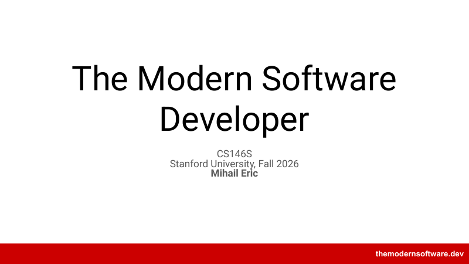
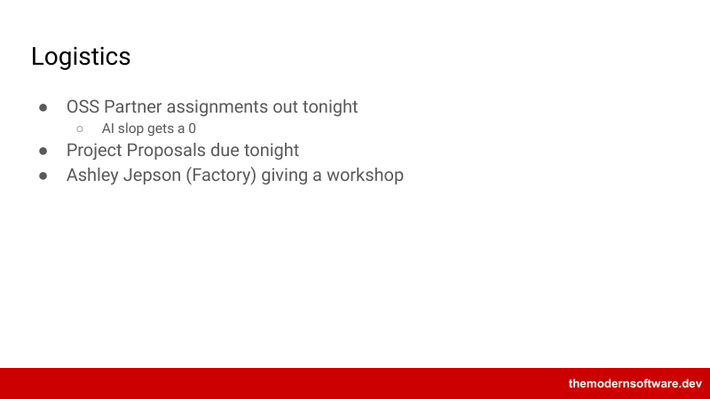
说明：这份实录只在开头有一个时间戳（00:45），没有逐分钟时间戳，所以本页按原段落顺序合并成约 150 词一段，引用写作「实录第 N 段」。讲者说 OSS 合作伙伴分配明天结束前发出，已有大约 80 人提交了偏好，没交的会随机分配。他说这门课评分不算特别严，很多按完成度；OSS 贡献很大程度看 PR 有没有合进对方仓库的主分支（讲者说别逐字引用他这句）。
一条硬要求：AI slop 的 PR 得零分。维护者是在慷慨地花时间审我们的代码，出于感激、也像在任何团队里一样，要先审自己的代码，别往队友身上扔垃圾；是否算 slop 由维护者判断。当然可以、也应该用编码 agent 生成 PR，这正是这门课的意义，但不能赶在截止前一小时随手写一个就交。
第二个截止：项目提案今晚交，这只是第一个里程碑，讲者说后面大约还有三个，目的是别把整个项目拖到最后一周，并让助教能及早给反馈。最后，Factory 的 Ashley 今天会来带大家上手 Factory 这个编码 agent 和平台；讲者会提前几分钟结束，给她 20 到 25 分钟，不强制留下。学期后段 Factory 的 CTO Eno 也会来做客座讲座。
静态的知识要接上动态的数据
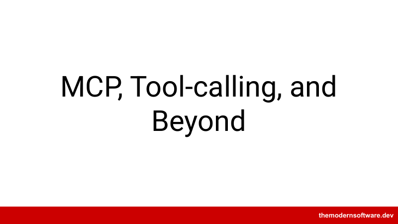
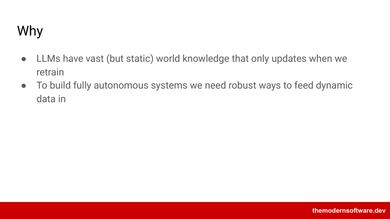
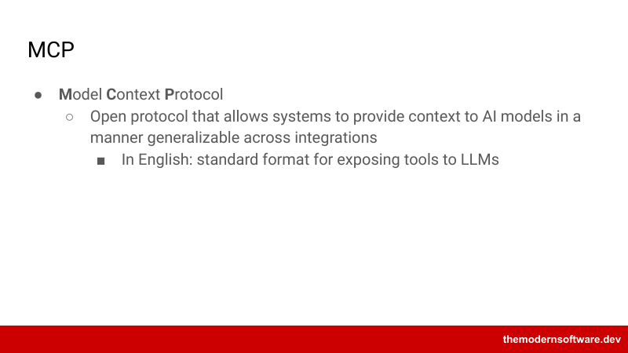
讲者说今天先在理论层面讲 MCP 的基本原理：怎么设计、协议是什么；再往前一步讲业界现在的实际做法。MCP 已经出现了将近两年，社区对什么有效、什么无效学到了很多；他认为它仍是 LLM、尤其是编码 agent 最重要的基础构件之一。高层要点是：今天的 LLM 是预训练系统，参数里学到的很大程度是静态信息，是训练数据某一时刻的快照。
作为静态系统它们已经有用，但要对世界上正在发生的事、对系统的最新版本作出反应，就得扩展到预训练权重之外，于是有了工具和 MCP 这样的协议。现场问谁用过 MCP，多数人摇头或没反应。讲者说 MCP 是 Anthropic 大约两年前开发的开放协议（讲者用的是「我相信」，未确认），最简单地说，它为把工具暴露给 LLM 提供了标准格式和协议——不只是本地开发的工具，也包括 Gmail、DoorDash 这样的第三方服务：你不想自己写集成，而是直接接上对方团队已经做好的能力。
规模大时，乘法变加法差别巨大
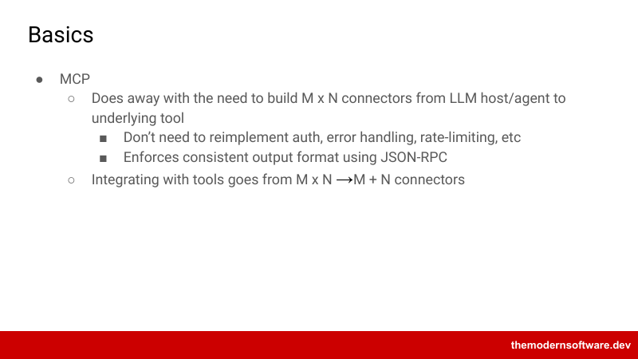
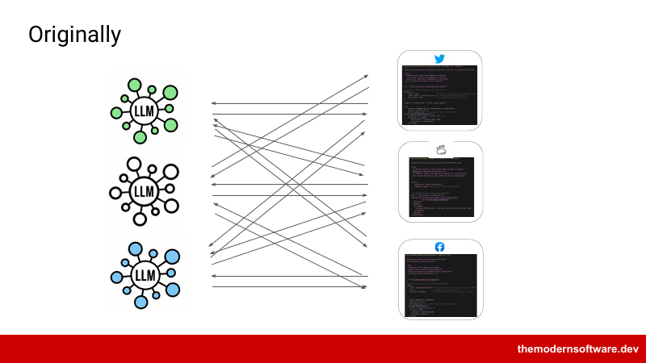
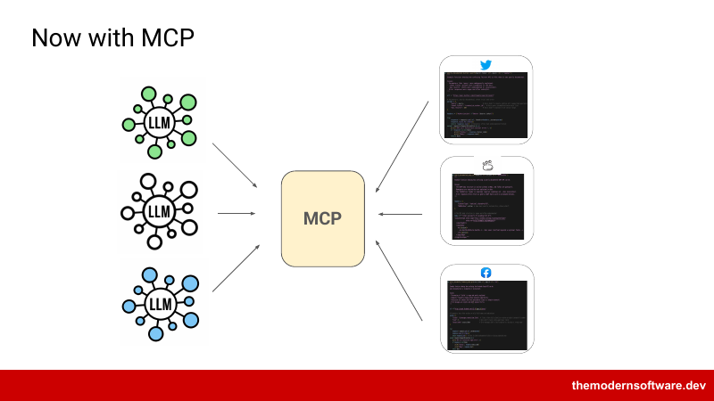
讲者说过去要把编码 agent 接到第三方服务，得为每一对点到点地建连接器：一边 M 个 LLM 或 agent、另一边 N 个服务，就是 M×N 个连接器。MCP 让认证、错误处理、限流这些各连接器共有的部分只做一次：只要 LLM 一侧会说 MCP、连接器一侧会说协议的另一半，就不用重来。Gmail 把自己暴露给所有编码 agent，每个 agent 都能和 Gmail 说话，这是它的主要价值。
输出格式也标准化了，底层基本都是 JSON。从 M×N 到 M+N：旧世界里，三个 LLM 各要连 Twitter、SOAP 系统和 Facebook，就是 3×3 共 9 条连接（按方向分开算是 18 条）；SOAP 代表一种较老的对外暴露服务的方式。
有了 MCP，LLM 一侧实现协议的接收方，服务一侧实现提供方，9 条连接变成 6 条。看起来提升不大，但规模上差别巨大：agent 和模型可能有几百个，服务更多，MCP 把乘法变成了加法。讲者也说这张图过于简化：中间那块代表协议这门「共同语言」，而实际上每个 API 都有自己的 MCP server。
默认会把所有工具都暴露进上下文
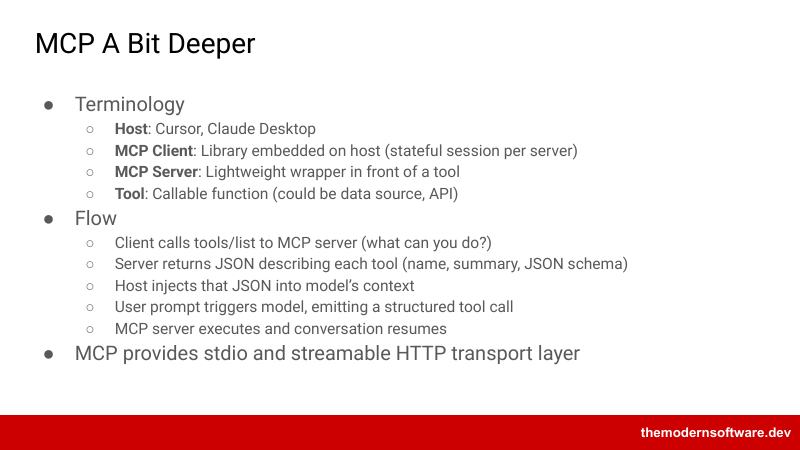
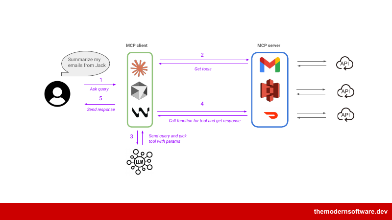
讲者说 host 就是 Cursor 或 Claude Desktop；MCP client 是 host 上的一个库，协议定义了 client，每个 server 维持一个有状态会话；server 是包在第三方或第一方工具外面的一层。第三方工具通常走 HTTP 这类网络协议；自己写 MCP server（本周或下周作业之一）往往放在本地，用 stdio 和编码 agent 通信。第三方服务一般是远程的。
最后一个词是 tool：讲者说可以把它近似看成一个 API（打了大引号），是暴露给协议客户端的可调用函数。典型流程大约四五步，完整规范是公开开源的。client 先做发现：调用 tools/list 问 server 有哪些工具；server 返回描述每个工具的 JSON：名字、摘要和 JSON schema——讲者提醒，这和之前拆开 Claude Code harness 时看到的结构一样，正是 LLM 判断何时用、怎么用工具所需的信息。
host 把这些信息注入模型上下文；用户的请求触发模型，模型若决定用某个 MCP 工具，就按收到的定义发出结构化调用；本地或远程的 server 执行、返回，对话继续。示意图上，用户让聊天机器人总结 Jack 的邮件，host（Claude、Cursor、Windsurf 等）收到请求，第二步是发现有哪些能力。
假设通过 MCP server 接了 Gmail、S3 和 DoorDash 三个服务，它们不是我们实现的，而是别处的开发者定义的，我们已经用 OAuth 认证过。第三步是智能层：把请求和可用工具一起交给 LLM，它认出 Gmail 相关，返回一个结构化调用，大概是列邮件的工具；server 在底层调用 API——所以说它是 API 的包装——拿到响应后返回。
有学生问 MCP 是不是只能给 API 用。讲者说任何系统只要按协议定义交互都可以用，不只是 agent，只是通常接收方是 LLM、协议也围绕 LLM 的需要做了优化，server 也通常是 API 的包装。至于 client 和 host 的区别：实践中大家很少说 host，更多说 client 库，比如 Cursor 里跑的 Python 或 JavaScript SDK。
讲者补充，在课上自己搭的极简 harness 里，甚至没有定义协议这一层，只是约定了工具签名的写法。关于工具膨胀：默认会暴露所有工具。他说之前展示的 Claude harness 轨迹大约 10,000 行 JSONL，真正的对话包括提示也许只有 600 到 700 行，其余都是所有可用工具的 schema、参数和名字。这是 MCP 一个相当大的局限，用朴素做法很快就会遇到工具问题。
早期把 API 端点一对一做成工具，GitHub 一个 server 就有约 150 个工具
问题一是撑满上下文，二是把 LLM 搞糊涂：讲者引用他前几讲说的「dumb zone」和「smart zone」，工具太多很难推理、也更容易混淆。有方法和论文在 MCP 前先做 RAG：一个中间层给所有工具建索引，语义搜索取最相关的、比如最多 10 个，只把这些放进上下文。早期大家朴素地把 API 端点一对一映射成 MCP 工具，接 GitHub 的 MCP server 时大约有 150 个工具，接一个 server 就没空间放别的了。
通常通过 OAuth 等方式连接：在 Codex 或 Claude 里运行一条命令添加 server、认证，之后工具就对 client 可用；认证 token 有存活时间（TTL），过期要重新认证。讲者说基本问题仍是怎样把工具暴露给 LLM：可以直接用 API、把 token 放进上下文让模型调用，也可以用 CLI；MCP 是为这件事优化的协议，好处包括标准化、安全和版本管理，三者的取舍后面再讲。
MCP 不是 REST API 的包装：按结果设计，而不是按操作
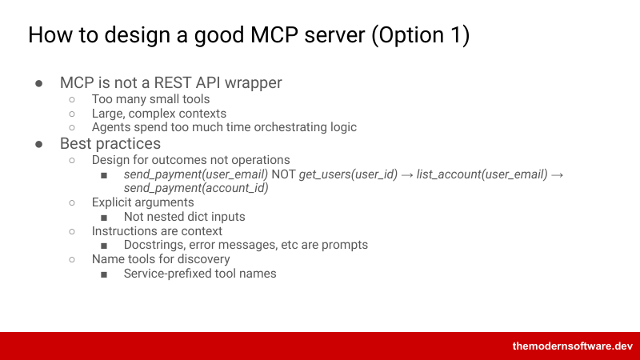
send_payment(user_email)，而不是 get_users(user_id) → list_account(user_email) → send_payment(account_id)）；参数写明，不用嵌套 dict；指令就是上下文，docstring、错误信息都是提示；为便于发现而命名，工具名加服务前缀。讲者先讲了个家族史笑话当作休息，然后进入实践。2024 年到 2025 年初，大家花了最初三四个月尝试把每个 API 端点映射成一个 MCP 工具，效果不好：工具膨胀、上下文膨胀、LLM 被搞糊涂，而且当时的模型更不会区分工具。他记得 Cursor 曾经只允许 IDE 里有 88 个工具，有的 server 都装不全，光 GitHub 就有大约 120 到 150 个工具。
所以不要把 MCP server 看成 REST API 的包装。API 端点是为人设计的（有时对人也设计得不好），不一定适合 LLM 消费；一对一映射会让工具太碎，比如每种资源一个 get 工具，光 API 定义就可能撑满上下文窗口，agent 也要花大量时间编排简单逻辑。
做法一是围绕结果而不是单个操作设计工具。同一件事两种做法：一种是「给这个邮箱的用户付款」，一次调用完成；另一种照传统 API 映射：API 只有「给账户付款」，于是先从认证 token 的用户 ID 拿邮箱，再列出邮箱名下的账户，最后用账户 ID 付款——要连续做对三次工具调用，每次都是一轮 LLM 请求和响应。
讲者说改进后的 MCP server 关注的是我们想让 LLM 做什么的语义，而传统 API 是为暴露或修改每份数据设计的。另一条做法是参数写明：回想第一讲的读文件、改文件、列文件工具都显式标注了类型；类型标注、docstring、函数名都是 LLM 推理的上下文。在 Python 里到处用 *args 和 **kwargs 省事，但 LLM 很难知道该填什么。早期最先出问题的之一，就是模型选对了工具却给错了参数。
避免巨大的无类型字典，要用就用 Pydantic 或类型标注描述它。指令是上下文，docstring 是上下文，每个标注都是上下文，写 MCP server 时写下的一切都同时给你和 LLM 读。错误信息也一样：哪怕只是抛一个泛泛的 Exception 而不是 ValueError、NameError 或自定义错误类型，都有区别，具体的错误类型能帮 LLM 理解错误、自己调试。再延伸一点是为便于发现给工具命名。
有学生问：付款那个例子里，是让 LLM 自己想办法从邮箱拿到账户 ID，还是你写好程序串起这些 API？讲者说实践中很难预先知道该给 LLM 暴露什么语义。常见情况是一开始不够用心，为了覆盖面疯狂加工具，直到发现有 100 个工具、得减少；这时就合并：看 LLM 的轨迹找常见模式，比如搜会议、搜转录、搜 Slack 线程三个工具，可以合并成一个以资源类型为参数的 search_resource。
最初设计时可能连 Slack 或邮件都还没支持，怎么预料到需要跨渠道的通用工具？通常是先积极地往墙上扔、看什么能粘住，等 LLM 连简单任务都搞糊涂了再合并，就是重构。至于给所有人用的 harness 和只给自己用的有何不同：讲者引用一句他喜欢的话——软件工程就是给编程加上时间和人。会被广泛使用的就要仔细考虑设计和各类使用者；只给自己用，可以没那么严格。
再一个问题：什么时候用更聪明的模型？讲者说取决于任务复杂度、成本、有没有微调模型等很多因素，路由是另一个话题，以后再谈。他承认付款是个玩具例子，实践中模型大概也能想出那个顺序；但即使三步都做对，也更贵、更慢、出错概率更高，这些都说明值得优化。
生成的代码在进程里跑，完整工具集从没进过模型上下文
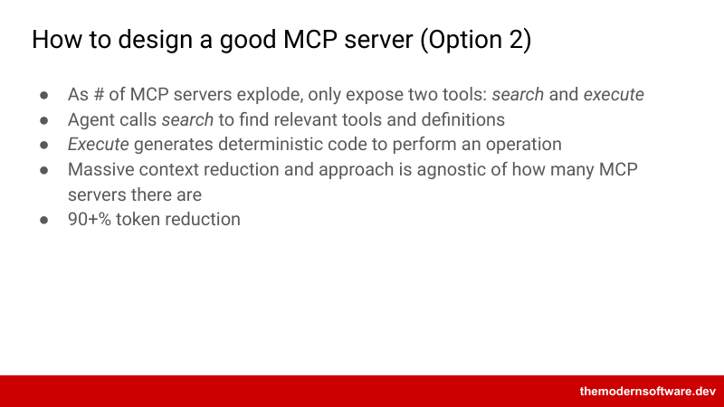
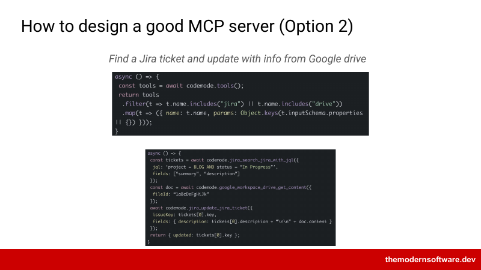
codemode.tools()，按名字含 jira 或 drive 过滤出工具和参数；下面一段依次调用 jira_search_jira_with_jql（查 BLOG 项目里 In Progress 的工单）、google_workspace_drive_get_content、jira_update_jira_ticket，把文档内容追加到工单描述后返回更新的工单号。讲者说做法二反映了现在的 MCP server 设计实践，和前面 RAG 的思路相关：与其把每个 server 的每个工具都一次塞进上下文，不如在需要时拉进合适的工具。基本做法是在你和其他 server 之间放一个元 MCP server，只暴露 search 和 execute 两个工具：search 找相关的 server、工具和定义，execute 在缩小候选后执行操作——中间层动态生成把工具串起来的代码，而不是让 LLM 一次次单独调用工具。
好处：一是上下文大幅减少，不再把所有工具一次装进窗口；二是接口与有多少个 server 无关，任意多个都可以被索引供搜索。讲者说有研究报告这种技术能减少超过 90% 的 token。业界名字不一，一个要记住的词是 code mode：通过代码生成工具调用、发出 server 请求。例子：「找到一个 Jira 工单，用 Google Drive 的信息更新它」，底层会根据请求动态生成一段代码，搜索可用工具并按请求过滤。
讲者强调这段代码是动态生成的，不是事先写好的：LLM 知道自己有 code mode 的 SDK，就生成代码取回最相关的工具定义。第二步 execute 再动态生成一段代码，把查 Jira、取 Drive 内容、更新工单串起来，这段代码作为进程执行，而不是由 LLM 自己执行，通常在 VM 里跑；完整的工具集从没进过模型上下文。有学生问过滤是否必须是语义的。
讲者说可以是语义的也可以是词法的；这个例子是词法的：LLM 认出请求里提到 Jira 和 Google Drive，就生成用 includes 过滤关键词的简单 JavaScript，也可以扩展成语义搜索。MCP gateway 是另一个话题，尤其适合团队，学期后面再讲；agent skills 下周有一整讲。然后把时间交给 Factory 的嘉宾。
MCP 网关架构、Agent Skills，以及 API、MCP、Skills 三者对比
下面几页课件在实录里没有展开：讲者在实录第 29 段说 MCP gateway 留到学期后面、agent skills 下周细讲，然后就结束了。以下只描述课件本身，讲者的口头说明未确认。
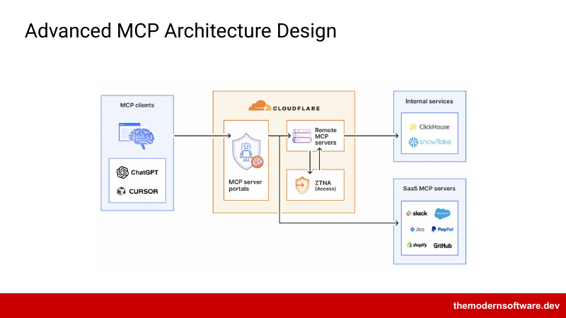
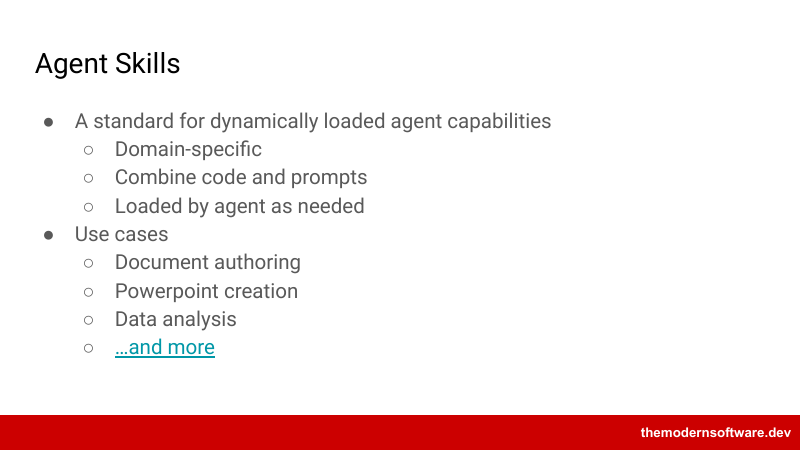
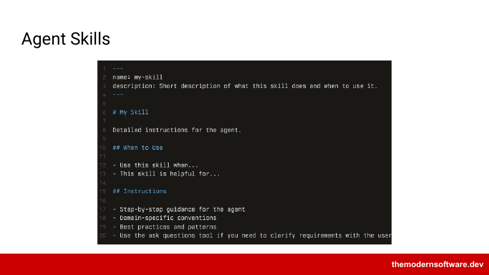
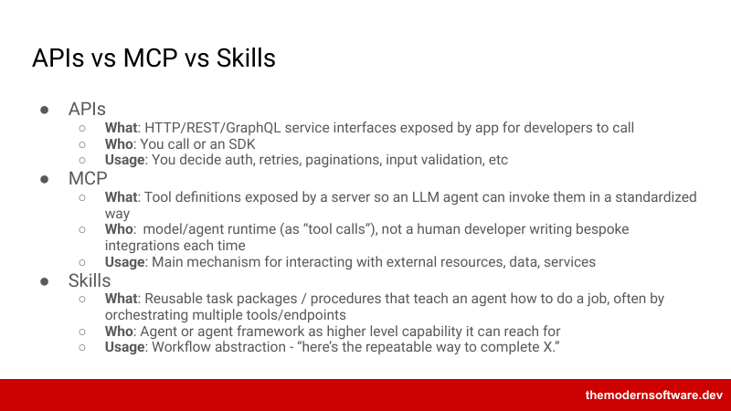